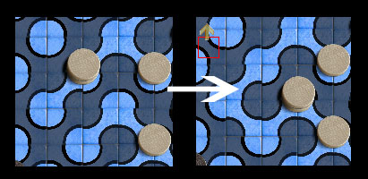
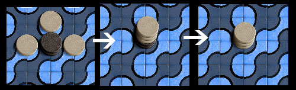
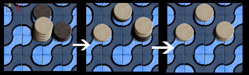

Clair joue le premier. Un coup
se constitue de une à trois possibilités
consécutives :
- Vous pouvez retourner une
tuile et la tourner de façon à faire correspondre
les couleurs, en la replaçant à la même position
sur le plateau. Retourner une tuile a pour effet de modifier le
schéma des rivières et des îles sur le plateau. La
tuile retournée doit obligatoirement être vide, sans aucun
pion sur l'un de ses coins.
- Vous pouvez déplacer
une pile de votre couleur en la faisant glisser vers toute
position de la même région, indiquée par la couleur
de sa position de départ. La pile doit être
déplacée en totalité et toute position
traversée doit être vide.
- Vous pouvez séparer
la pile déplacée (ou si vous n'avez
déplacé aucune pile, séparer l'une quelconque de
vos piles) en deux piles ou plus sur les cases adjacentes à la
pile brisée. Aucun pion ne doit rester sur la case de cette
pile. Les positions sur laquelles la pile est séparée ne
doivent contenir aucun pion de votre couleur. Si une position
d'arrivée contient une pile adverse, alors il faut placer sur
cette case au moins autant de pions que dans cette pile adverse. La
pile adverse est alors capturée et est retirée du plateau.
- Enfin, si vous n'avez pas séparé de pile,
vous pouvez assembler la pile
déplacée (ou si vous n'avez déplacé aucune
pile, assembler n'importe quelle pile) avec une ou plusieurs piles dans
une case centrale située entre ces piles. Les piles doivent
être assemblées en totalité. La case centrale
d'assemblable ne doit contenir aucun pion de votre couleur et, si elle
contient des pions adverses, il faut y rassembler au moins autant de
pions que dans la pile adverse, qui est alors capturée. La
hauteur finale d'une pile après capture ne doit pas être
supérieure à 4.
- Vous devez au moins faire un déplacement, une
séparation ou un assemblage. Si vous ne pouvez rien faire, vous
perdez.
En résumé :
- Vous devez déplacer, séparer ou assembler
quelque chose.
- Vous capturez les piles adverses de taille
inférieure ou égale en séparant ou en assemblant
sur cette case.
- Déplacements, séparations et assemblages se
font pour la totalité des piles impliquées.
- Vous ne pouvez pas rendre une de vos piles plus grande en
faisant une séparation ou en assemblant sur sa case.
- Une fois votre coup achevé, chaque pile n'est
constituée que d'une seule couleur et sa taille est
inférieure ou égale à 4.
|

Clair retourne une tuile et déplace une pile

Clair assemble 3 piles et
capture 2 pions sombres

Clair sépare 4 pions et capture 3 pions sombres
|